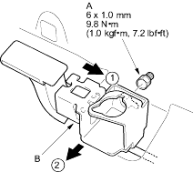
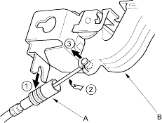

- Remove the front door sill trim (see page 20-206).
- Loosen the bolt (A) and remove the opener (B) from the bolt.

- Disconnect the fuel fill door opener cable (A), then remove the opener (B). Take care not to bend the cable.

- Install the opener in the reverse order of removal and note these items:
- Make sure the opener cable is connected properly.
- Make sure the fuel fill door opens properly and locks securely.